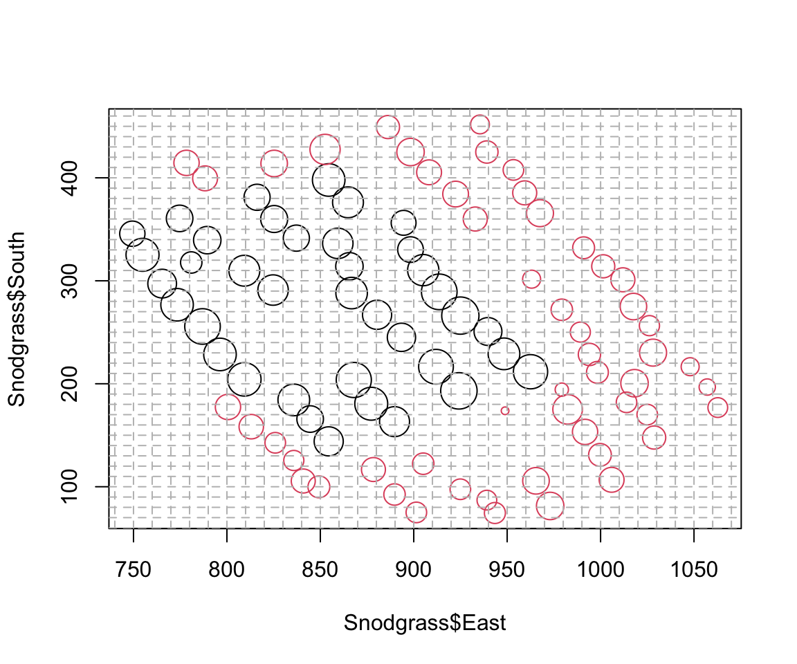
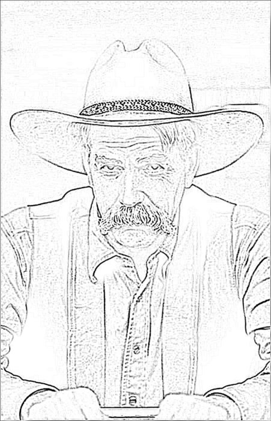
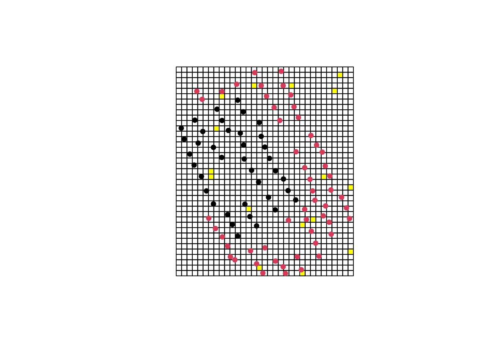
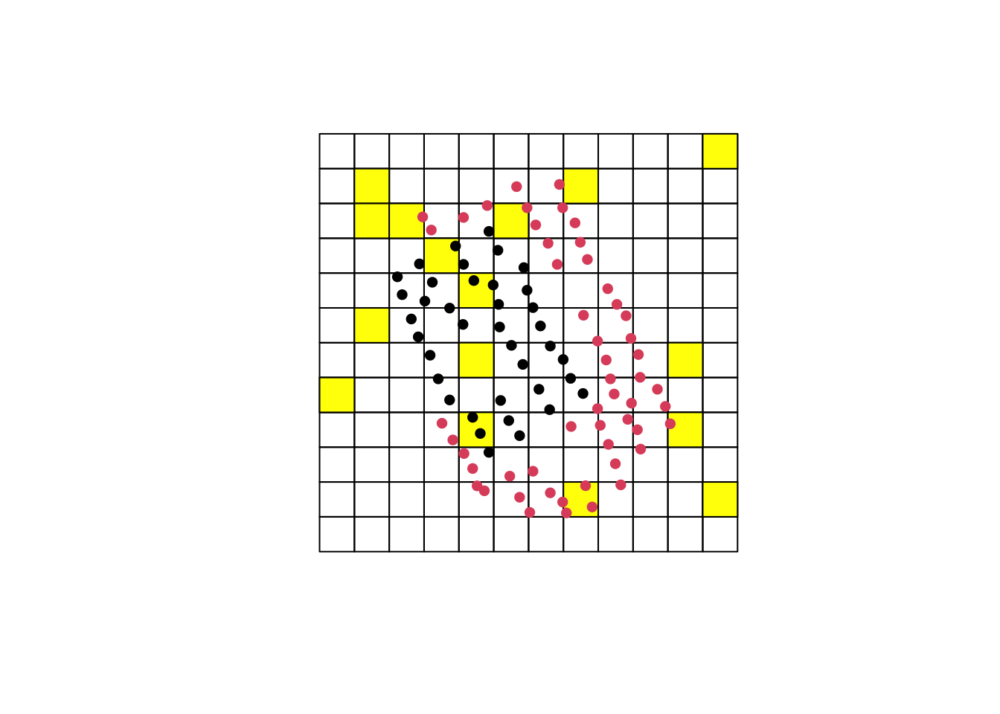
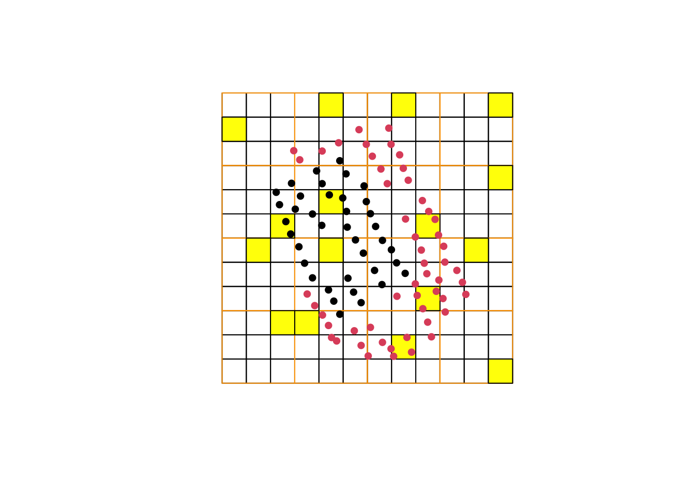
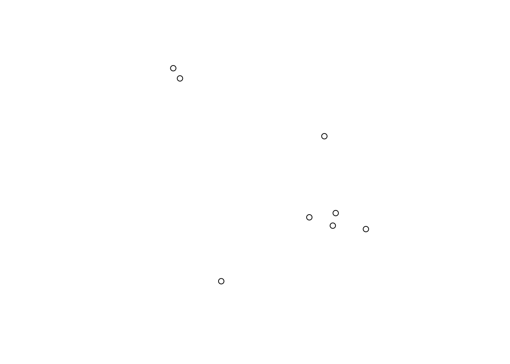
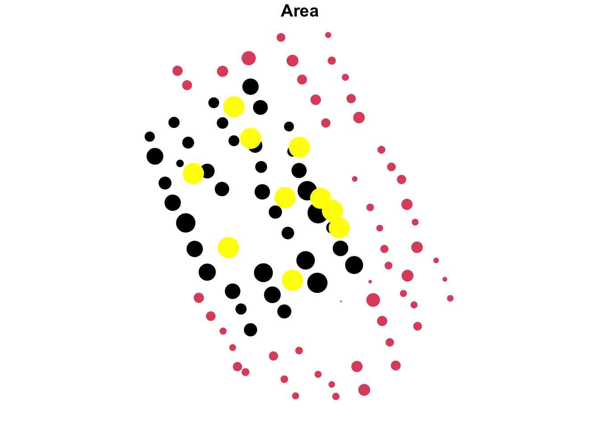

19 Sampling without Finding Anything (Ch. 19)
Table 19.1 is useful, and not difficult to generate on the fly in R. We can write a function that does the work, where ss = sample size and ep = estimated proportion in the population.
prob.absence<-function(ss, ep) {
tmp <- round((1-ep)^ss, 3)
return(tmp)
}
prob.absence(ss = 16, ep = .01)## [1] 0.851If we wanted to turn this approach around and ask instead how big a sample we would need to conclude with 95% confidence that the population of projectile points contained <1% obsidian points, we can make a function that solves the above equation for sample size, given a specified proportion and confidence level.
ss.absence <- function (ep, cl){
ss <- round(log(1-cl)/log(1-ep),0)
return(ss)
}
ss.absence(ep=.01, cl=.95)## [1] 29819.1 Problem Set
19.1.1 rework questions
Having developed a healthy distaste for rhinos (not to mention malaria, and hills), you have shifted your research attention to Missouri. Your diligent colleagues have mapped and excavated 91 house pits at the Snodgrass site, and argued that they detect two areas (inside and outside an interior dividing wall; see ?Snodgrass for more detail on these data). Worn out after a long day of supervising, you retire to the bar with the plot of the site in order to consider your next move.
#note that you'll need to install and load the *archdata* package
data(Snodgrass) #loads data included in the package
#estimate house pit radius from house pit area, converting to metric
Snodgrass$Radius <- sqrt(Snodgrass$Area/pi)/3.28
plot(Snodgrass$East, Snodgrass$South, cex = Snodgrass$Radius,
col = Snodgrass$Inside)
legend("topright", fill = c("red", "black"), legend = c("Extramural", "Intramural"))
You begin to feel first restored, and then inspired. Since you have artifactual data from all 91 house pits, the Snodgrass data offer the possibility of exploring the effects of sampling. Reasoning that you’ll rarely have the luxury of the time and funds to excavate 91 house pits, you wonder what the effects would be of sampling the site instead. An useful initial step is to re-establish the excavator’s grid over the site. You spread out your sitemap on the bar, and using the edge of your trowel establish a 10x10m grid on it.
plot(Snodgrass$East, Snodgrass$South, cex = Snodgrass$Radius,
col = Snodgrass$Inside)
abline(v = seq(round(min(Snodgrass$East),-1) - 20,
round(max(Snodgrass$East), -1) + 20,
by = 10),
h = seq(round(min(Snodgrass$South),-1) - 20,
round(max(Snodgrass$South), -1) + 20,
by = 10),
lty = 2, col = "grey")

You briefly consider using the dartboard in the back of the bar to randomly select 16 grid squares, but worry that years of practice have made your aim somewhat better than random. And then there’d still be the problem of selecting a stratified random sample…
While you’re pondering this dilemma, the mysterious stranger seated next to you at the bar volunteers to work out the sampling for you in R, so that you can focus on considering what the results mean. Moved nearly to tears, you buy him a beer and look over his shoulder.
First, the mysterious stranger explains, he’ll use the sf package to convert the Snodgrass data frame to what sf calls a ‘simple feature’, by telling it which columns to use as coordinates, and then he’ll create a grid that overlays the data.
#first create an sf object by specifying which columns contain coordinates
Snodgrass <- st_as_sf(Snodgrass, coords = c("East", "South"))
#then create a grid
snodgrass_grd <- st_make_grid(Snodgrass, offset = c(740, 70), cellsize = 10,
what = "polygons")He suggests examining the results early and often to make sure things are going as planned.
plot(snodgrass_grd)
#add house pits, plotting only the centerpoints
plot(Snodgrass, add = T, col = Snodgrass$Inside, pch = 16)
With that grid established, we can select random grid cells and examine the artifacts found within them.
set.seed(42)
#select 16 random squares
snodgrass_grd_random <- snodgrass_grd[sample(1:length(snodgrass_grd), 16)]
plot(snodgrass_grd)
plot(snodgrass_grd_random, col="yellow", add=T, density=5) #plot to make sure that these make sense
plot(Snodgrass, add = T, col = Snodgrass$Inside, pch = 16)
Seeing a problem already, you start to twitch, risking spilling the stranger’s beer. He gives you a long stare. “Our sample’s going to be empty!” you cry.
## Sparse geometry binary predicate list of length 16, where the predicate
## was `contains'
## first 10 elements:
## 1: (empty)
## 2: (empty)
## 3: (empty)
## 4: (empty)
## 5: (empty)
## 6: (empty)
## 7: (empty)
## 8: (empty)
## 9: (empty)
## 10: (empty)Screwing up your courage, you explain that even though it’s not as fashionable as it once was, you’ve read Flannery’s Early Mesoamerican Village (Flannery (1976)), and are acutely aware of the Teotihuacan problem: a purely random spatial samples risks missing things that you know are there!
“I’m not the idiot you seem to think I am,” the stranger suggests, “but if we can’t select a random spatial sample to begin with, how are we ever going to do anything else?” You pipe down. “Now that we’ve established the method and recognized some pitfalls,” he adds, “we can change the resolution of our grid. And because you at least recognize the problem, I’ll show you how to do quadrat sampling as well.”
Make a new grid with a resolution of 40m, expanding the coverage a bit.

And sample it randomly.

Examine the house pit data from that sample.
#identify house pit centers that fall within those squares
snodgrass_40sample <- st_contains(snodgrass_grd40_random, Snodgrass)
#index house pit data to select only those housepits that fall within squares
snodgrass_40sample_data <- Snodgrass[unlist(snodgrass_40sample),]| Length | Width | Segment | Inside | Area | Points | Abraders | Discs | Earplugs | Effigies | Ceramics | Total | Types | Radius | geometry | |
|---|---|---|---|---|---|---|---|---|---|---|---|---|---|---|---|
| 81 | 11.0 | 12.0 | 2 | Outside | 132.0 | 1 | 0 | 0 | 0 | 0 | 1 | 2 | 2 | 1.976233 | POINT (1062.73 176.89) |
| 48 | 14.5 | 16.0 | 1 | Inside | 232.0 | 2 | 0 | 1 | 1 | 0 | 3 | 7 | 7 | 2.619963 | POINT (816.14 381.09) |
| 47 | 18.0 | 17.5 | 1 | Inside | 315.0 | 6 | 2 | 4 | 4 | 0 | 7 | 23 | 11 | 3.052857 | POINT (859.35 336.34) |
| 49 | 15.0 | 15.5 | 1 | Inside | 232.5 | 1 | 0 | 1 | 1 | 0 | 5 | 8 | 6 | 2.622785 | POINT (837.16 341.42) |
| 2 | 16.0 | 16.0 | 2 | Outside | 256.0 | 0 | 0 | 0 | 0 | 1 | 0 | 1 | 1 | 2.752144 | POINT (973.01 81.33) |
| 65 | 12.0 | 12.5 | 2 | Outside | 150.0 | 1 | 0 | 0 | 0 | 0 | 1 | 2 | 2 | 2.106672 | POINT (943.43 74.49) |
The object snodgrass_40sample_data, you’ll find if you examine it (with str()), is an sf point feature collection - which is to say that it’s a data frame with point coordinates attached. The variables are data recorded about the house pits within each of your randomly selected grid squares. If you simply run data.frame() on it, you’ll get a data frame exactly like those that you’re very familiar with.
Worried that the mysterious stranger may finish his beer and leave you to your own devices, you postpone analyzing that sample and watch as he works on selecting a systematic sample of 16 grid squares, after borrowing the bartender’s tattered copy of Drennan and checking the procedure that Drennan outlines on p242. He will, he explains, subdivide the grid into 16 quadrats and sample one grid square from each quadrat.
#add a coarse grid for quadrats
snodgrass_quadrats <- st_make_grid(Snodgrass, offset = c(660, 30), cellsize = 120,
what = "polygons")
plot(snodgrass_grd40)
plot(snodgrass_quadrats, add = T, border = "orange")
plot(Snodgrass, add = T, col = Snodgrass$Inside, pch = 16)
#loop through these quadrat polygons, selecting a single random square in each one
snodgrass_quadrats_points <- vector("list", length=16) #empty list to populate
set.seed(42)
i<-1
for (i in 1:length(snodgrass_quadrats)){
snodgrass_quadrats_points[i] <- st_sample(snodgrass_quadrats[i], size = 1,
type = "random")
}
#then combine the result into one spatial points object
snodgrass_quadrats_sample <- st_within(st_sfc(snodgrass_quadrats_points),
snodgrass_grd40)
#and index the 40m grid
snodgrass_quadratsampled_grd <- snodgrass_grd40[unlist(snodgrass_quadrats_sample)]
#plot to check
plot(snodgrass_grd40)
plot(snodgrass_quadrats, add = T, border = "orange")
plot(snodgrass_quadratsampled_grd, col = "yellow", add = T)
plot(Snodgrass, add = T, col = Snodgrass$Inside, pch = 16)
#since that makes sense, identify house pit centers that fall within those squares
snodgrass_40quadsample <- st_contains(snodgrass_quadratsampled_grd, Snodgrass)
#index house pit data to select only those housepits that fall within squares
snodgrass_40quadsample_data <- Snodgrass[unlist(snodgrass_40quadsample),]You can now examine compare two different samples - a random sample of grid squares (snodgrass_40sample_data) and a stratified random sample of grid squares (snodgrass_40quadsample_data) - and compare them against the whole population (Snodgrass).
When you look up, satisfied that you can now compare different sample sizes and sampling strategies, you discover that there’s nothing left next to you at the bar but an empty pint glass.
Resolving to thank him next time you see him, you settle in to work on comparing the effects of different sampling strategies:
- Construct a bullet plot that compares median house area and median number of artifacts per house across these two samples, the whole population, and two additional samples that you generate (one random and one stratified random; you can recycle the code above by changing the value for
set.seed()).
- Construct a bar plot that compares effigies as a proportion of total artifacts across the two categories of houses (Inside/Outside) for both your various samples and the whole population. Calculate 95% confidence intervals for each proportion and display them on your barplot.
- What happens if you select samples that are 50% larger (i.e. 24 squares rather than 16)?
- What problems does each sampling strategy encounter, and what strategies might you use to mitigate those (keeping in mind that massively increasing your sample size will almost always help, but is usually more easily said than done)? In the absence of evidence of an interior dividing wall, would you be likely to identify two separate groups of houses?
- How are the results of this spatial sampling (choosing grid squares) likely to differ from simply randomly sampling the 91 houses (for instance by numbering them and selecting 16 random numbers between 1 and 91)? Under what circumstances (sticking with the Snodgrass example) might you opt for spatial sampling, either simple random or stratified, and in what circumstances might you employ simple random non-spatial sampling?
Stratified sampling: inside/outside as sampling strata.
## Simple feature collection with 91 features and 14 fields
## Geometry type: POINT
## Dimension: XY
## Bounding box: xmin: 749.38 ymin: 74.49 xmax: 1062.73 ymax: 451.83
## CRS: NA
## First 10 features:
## Length Width Segment Inside Area Points Abraders Discs Earplugs Effigies
## 1 12.0 12.0 2 Outside 144.0 0 1 0 0 0
## 2 16.0 16.0 2 Outside 256.0 0 0 0 0 1
## 3 17.0 18.0 1 Inside 306.0 1 0 1 0 1
## 4 21.0 21.5 1 Inside 451.5 2 1 1 1 0
## 5 20.5 20.0 1 Inside 410.0 3 2 2 1 0
## 6 16.5 16.0 1 Inside 264.0 0 0 0 0 0
## 7 18.0 19.0 1 Inside 342.0 5 0 5 0 0
## 8 21.0 19.0 1 Inside 399.0 13 0 0 2 2
## 9 7.5 8.0 2 Outside 60.0 0 0 0 0 0
## 10 19.0 15.5 2 Outside 217.0 1 0 0 0 1
## Ceramics Total Types Radius geometry
## 1 0 1 1 2.064108 POINT (901.39 75.07)
## 2 0 1 1 2.752144 POINT (973.01 81.33)
## 3 1 4 4 3.008929 POINT (889.71 163.21)
## 4 5 10 8 3.654939 POINT (924.16 193.1)
## 5 4 12 9 3.482917 POINT (911.9 216.55)
## 6 0 0 0 2.794816 POINT (939.73 250.75)
## 7 4 14 8 3.181004 POINT (948.29 229.06)
## 8 12 29 17 3.435877 POINT (962.5 211.67)
## 9 0 0 0 1.332376 POINT (979.24 194.28)
## 10 0 2 2 2.533851 POINT (991.69 153.24)set.seed(42)
samp_inside <- st_sample(Snodgrass[Snodgrass$Inside == "Inside",],
size = round(.25 * nrow(Snodgrass[Snodgrass$Inside == "Inside",])), 0)
plot(samp_inside)
samp_inside <- st_sf(samp_inside)
samp_inside <- st_join(samp_inside, Snodgrass)
samp_outside <- st_sample(Snodgrass[Snodgrass$Inside == "Outside",],
size = round(.15 * nrow(Snodgrass[Snodgrass$Inside == "Outside",])), 0)
plot(samp_outside)
plot(Snodgrass["Area"], col = Snodgrass$Inside, pch = 20, cex = Snodgrass$Area/100)
plot(samp_inside["Area"], add = T, pch = 20, cex = samp_inside$Area/100, col = "yellow")